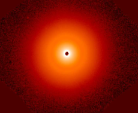
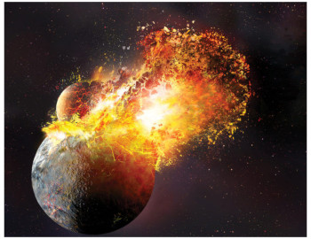
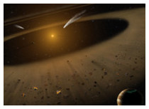
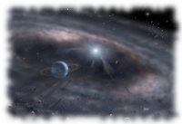
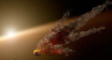
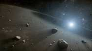

Kate Y. L. Su
Research Scientist
Space Science Institute
Recent News
 Where are the planets?
Legendary Star Lacks Evidence for Large Planet Construction -- NASA's Hubble, Webb Probe Surprisingly Smooth Disk Around Vega. Read more from the Press release and the Research Paper Star-sized Debris Cloud from Distant Collision Spotted by NASA telescope Observations obtained by NASA's now-retired Spitzer Space Telescope found major smashups between rocky bodies in a young exoplanetary system called HD 166191. The aftermath of this violent event creates a giant debris cloud blocking the the star light and giving scientists details about the smashup that occurred. More...
 SOFIA Confirms Nearby Planetary System is Similar to Our Own NASA’s flying observatory, the Stratospheric Observatory for Infrared Astronomy, SOFIA, recently completed a detailed study of a nearby planetary system called epsilon Eridani. The investigations confirmed that this nearby planetary system has an architecture remarkably similar to that of our solar system. More...
 Baby Photos of a Scaled-Up Solar System. Astronomers have discovered two dust belts surrounded by a large dust halo around young star HD 95086. The findings provide a look back at what a scaled-up solar system may have resembled in its infancy. More...
 NASA's Spitzer Telescope Witnesses Asteroid Smashup. Using data taken by NASA's Spitzer Space Telescope, astronomers at the University of Arizona have spotted an eruption of dust around a young star, possibly the result of a smashup between large asteroids. This type of collision can eventually lead to the formation of terrestrial planets. More...
Space Telescopes Find Evidence for Asteroid Belt around Vega. A UA-led team of astronomers has discovered inner asteroid belts and outer comet-filled belts similar to the arrangement found in our solar system around nearby stars Vega and Fomalhaut. A wide gap between the inner and outer belts strongly hints at the existence of yet undiscovered planets circling the bright stars. More...